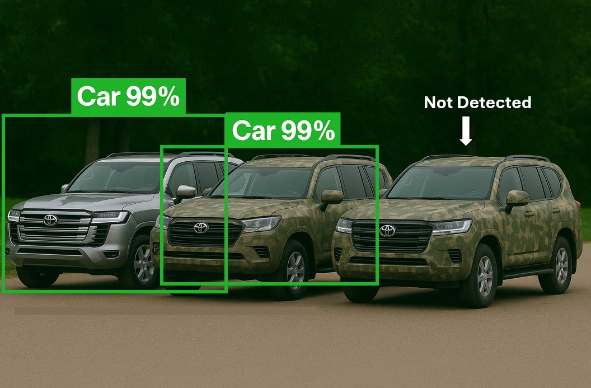

3D Adversarial Camouflage

Figure 1: 3D adversarial camouflage patterns optimized to blend into military environments while being misclassified by AI object detection models. Left: Normal vehilce without any camouflage. Middle: Vehicle military camouflaged - still detected by object detector. Right (ours): Vehicle adversarial camuflaged - undetected.
Overview
While working as an AI safety researcher at Advai, one of my most impactful projects focused on the design and deployment of 3D physical adversarial camouflage to fool state-of-the-art object detection models, such as those from the YOLO family and Faster R-CNN. Although the specifics of the project are under NDA, this page shares high-level insights into the challenges, innovations, and outcomes of the work.
The goal was to bridge the gap between digital adversarial attacks and physically deployable camouflage that remains effective across varying distances, lighting, and camera resolutions—without compromising on visual realism. Our final designs achieved a state-of-the-art misclassification rate in physical environments while still maintaining a plausible military-style appearance.
What are Adversarial attacks?
In computer vision, adversarial attacks involve introducing small, carefully crafted perturbations to digital images to fool AI models into making incorrect predictions. A common type of attack involves optimizing a subtle change to the input image that leads to catastrophic misclassification, even though the change is imperceptible to humans.
Figure 2: Example of a traditional 2D adversarial attack from (Szegedy et al., 2014) paper.
(Learn more in my post on What are adversarial attacks)
From 2D Adversarial Attacks to 3D
The aim of this project was to translate the principles of 2D adversarial attacks into the physical world—specifically by designing textures that can be applied to vehicles in real environments. Unlike digital attacks, which operate in static and controlled conditions, physical attacks must function across a wide range of real-world constraints: changing viewpoints, varying camera heights, rotations, lighting conditions, and occlusions.
This project posed a challenging question:
Can we design a robust, physically deployable adversarial camouflage for vehicles that remains visually consistent with military aesthetics while being consistently misclassified by object detection models?
Note that although this project focuses on adversarial patches-which overwrite a small region of an image rather than perturbing the entire image-we refer to them broadly as adversarial attacks for simplicity. Patches are a specific subclass of adversarial attacks, optimized for local perturbations with similar misclassification objectives.
Results
Unfortunately, the details of how we constructed and evaluated the physical adversarial camouflages are under NDA, but Figure 1 illustrates the visualization of the goal of the project, which we managed to create an adversarial patch that is both adversarial (misclassified by AI object detector models) and looks military camouflaged. In this project, we not just achieved the highest recorded 3D physical adversarial attack on object detectors, but we also extended the evaluating pipeline significantly to evaluate wider ranges of different objectives, such as different camera resolutions, projections, heights, etc.
Why It Matters
As AI systems like drones, surveillance cameras, and self-driving cars become increasingly common in both military and civilian settings, the ability to physically mislead object detectors through adversarial camouflage raises serious concerns. This work suggests that 3D adversarial textures could be used to evade detection by AI systems in real-world environments—whether to avoid targeting in warfare or to disrupt autonomous vehicles in civilian life. Although specific technical details are under NDA, the implications are clear: physical adversarial attacks represent a credible threat to the safe and reliable deployment of machine learning in high-stakes applications.